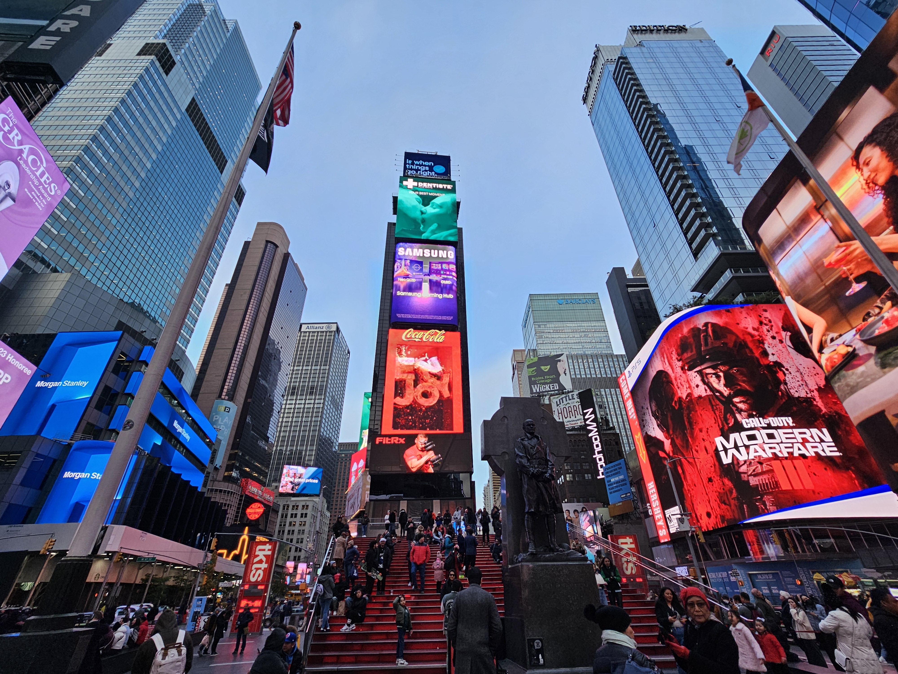

By Walking
- Exit from the platform your LIRR train arrives on and head to the mezzanine. Then, take the 47th Street escalators to the concourse.
- Once there, find the exit for 47th Street, where you will end up on street level near 47th Street and Madison Avenue.
- Do note, there are 2 staircases at this area, separated by the ticket machine.
- Walk South towards 46th Street. Then make a RIGHT at 46th Street and Madison Avenue, and walk WEST along 46th Street until you reach 7th Avenue.
- Once you reach 46th Street and 7th Avenue, you will see the red staircase at Duffy's Square.

Some Tips and Tricks
- At Grand Central, there is a set of elevatorsthat will take you up from the mezzanine to the concourse.
- It's located between the 46th Street and 47th Street escalator banks on the mezzanine, so look for signs.
- There is another elevator available on the Concourse level, that will take you to the Street level.
- This elevator is located in a small corner past the ticket at 47th Street, facing away from the 47th Street escalator bank.
- Another option, is to directly walk WEST on 47th Street, from Madison Avenue to 7th Avenue.
- At 7th Avenue, cross the street, and you will see the back of the staircase. Walk towards it.

Expected Time Taken - Minutes
- To get onto street level from the LIRR tracks, it will take you roughly 5 Minutes depending on your speed and method you chose.
- To get from the street level (near 47th and Madison) to the Red Staircase at Times Square, it will take roughly 11 Minutes, depending on your speed.
Map Overview
Below is a map showing the route from Grand Central (when you get onto street level) to Times Square.
View A Google Maps Route from Grand Central (47th St and Madison Avenue) to Times Square - The Red Staircase
Visual Guide
